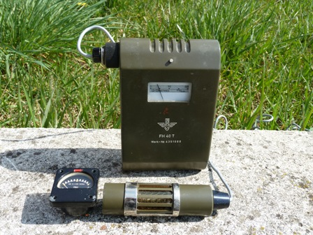
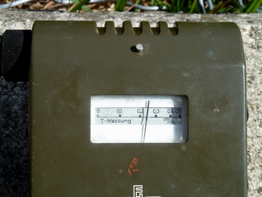

Poco meno di un quarto di secolo fa (mannaggia quanto tempo...!), mi ero procurato un contatore Geiger ex militare dell'Esercito tedesco, sull'onda emozionale dell'evento di ЧернобЫл, anche se troppo tardi per poterlo provare in diretta sul fall out italiano di quel disastro nucleare.
Quando l'ho preso speravo (e ovviamente non ho cambiato idea!) di non doverlo mai usare "sul campo", ma solo di studiarlo come curiosità tecnica e per una recensione che dovevo fare per una rivista di elettronica; dopo di chè finì a far compagnia a tanti altri apparecchi di provenienza ex militare serviti al medesimo scopo divulgativo.
In questi tempi molto sfortunati per il Sol Levante, ho riesumato il mio vecchio articolo e rispolverato l'apparecchio, purtroppo tornato forzatamente di moda con il disastro di Fukùshima.
Il Geiger qui presentato è il modello FH-40b, costruito nel 1963 dalla Frieseke & Hoepfner, nel pieno periodo della guerra fredda, quando tra i due muri contrapposti aleggiava costante la possibilità del lancio estemporaneo di qualche bombetta atomica tattica...
Tutti i reparti militari tedeschi, anche a basso livello, erano equipaggiati fin da allora di semplici ma affidabili apparecchi per la rilevazione campale di radioattività, e l'FH-40b è uno di quelli.
Senza entrare nel funzionamento di un Geiger (ciò si trova facilmente altrove), dico solo due parole sullo schema: tutto ruota attorno al tubo sensibile alle radiazioni β + γ (FHZ76V); un transistor funziona come oscillatore per la generazione dell'alta tensione necessaria al tubo (500 V) e altri tre transistors costituiscono gli stadi di amplificazione per il pilotaggio del milliamperometro e dell'uscita in cuffia.
Altra parte rappresenta le varie commutazioni di scala e altre accessorie.
L'alimentazione era data in origine da una batteria ricaricabile al Ni-Cd da 6V, che ho sostituito con due da 3V al litio.
I fondo scala di lettura dell'apparecchio sono rispettivamente 1 R/h, 25 mR/h, 0,5 mR/h, 10.000 impulsi/min, 320 impulsi/min e quindi l'unità di misura è espressa in mR/H (milliRoentgen/ora) ed in impulsi/min, che sono i classici ticchettii che si sentono nei film catastrofici quando viene inquadrato un Geiger.
La sensibilità sulle due scale 0-0,5 mR/h e 0-320 i/h è sufficiente a rilevare la radiazione naturale di fondo, che nella mia zona sono mediamente circa 6-7 impulsi al minuto. Essendo il fondo dovuto prevalentemente alla radiazione cosmica casuale, può capitare che lo strumento se ne rimanga zitto anche per mezzo minuto e poi improvvisamente riveli 3-4 "particelle" in una decina di secondi. Il fondo naturale è grossolanamente da 0,01 a 0,03 mR/h.
Per vedere e sentire lo strumento in funzione ho avvicinato per l'occasione al tubo sensibile un milliamperometro di un apparecchio aeronautico militare della seconda G.M., che ha i riferimenti che un tempo erano fosforescenti per poter essere letti al buio.
La fosforescenza era allora provocata aggiungendo alla vernice a base di solfuro di zinco una piccola quantità di sostanze radioattive (che non è possibile determinare: forse Th232, Ra226, ???).
(Per associazione, mi vengono in mente in questo momento le famose "Radium Girl" degli anni '20 dello scorso secolo: provate a dare un'occhiata cercando questo nome con Google e poi possiamo riparlare della sensibilità ambientalista di qualche decennio fa...).

La radiattività letta con questo milliamperometro ex luminescente a contatto del tubo raggiunge picchi di 0,40 mR/h, una ventina di volte oltre il fondo naturale.Ma possiedo anche un ALTRO milliamperometro, sempre dello stesso periodo, che lo batte di un ordine di grandezza!! (Per questo motivo, a suo tempo l'avevo nascosto talmente bene che in una ricerca affrettata tra le mie cose non sono riuscito a trovarlo... e ho dovuto usare la riserva).

Quando ho fatto le fotografie che si vedono qui accanto stava passando da noi la prima nube di Fukùshima (siamo nel 2011), e naturalmente, data l'estrema diluizione della radioattività dopo aver attraversato mezzo mondo, niente è stato rilevato dalle mie semplicissime e momentanee osservazioni.
Sarei curioso, solo virtualmente s'intende!, di vedere dove sarebbe andata la lancetta dell'FH-40 se mi fossi trovato nel medesimo momento in qualche posto del nord del Giappone...